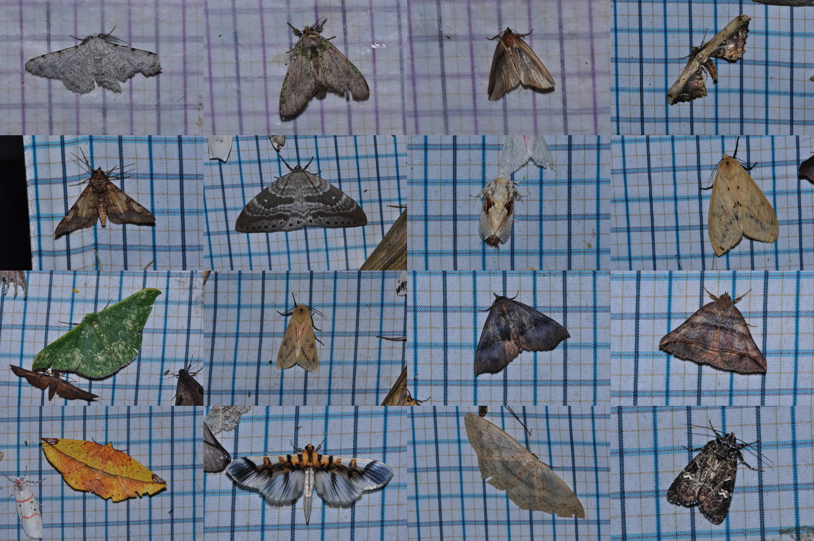
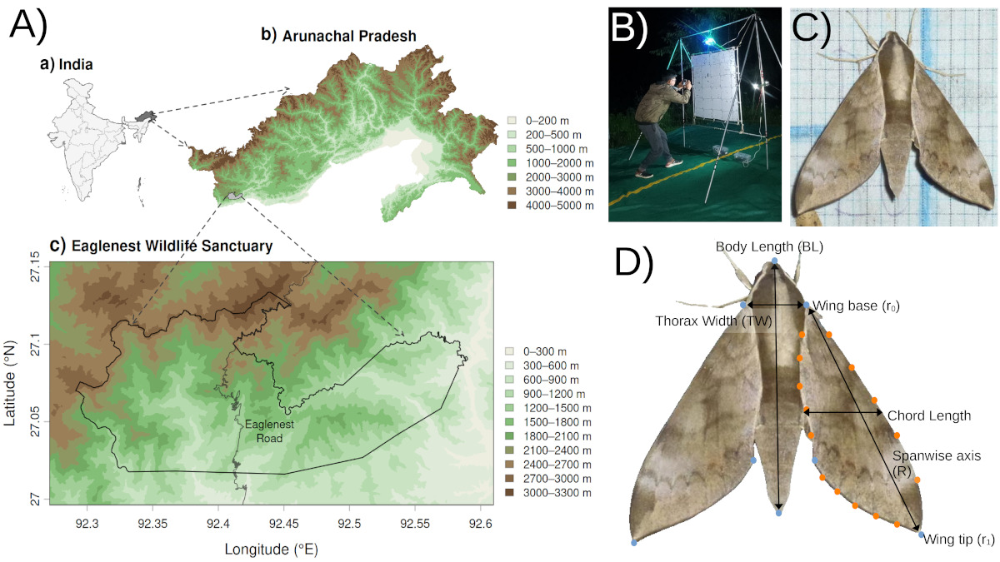
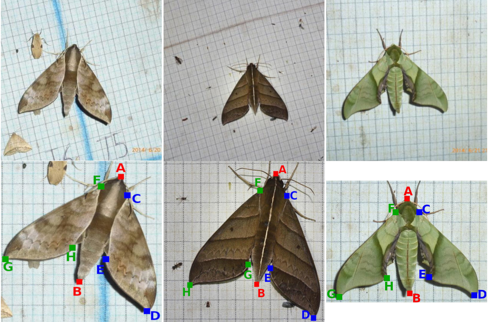
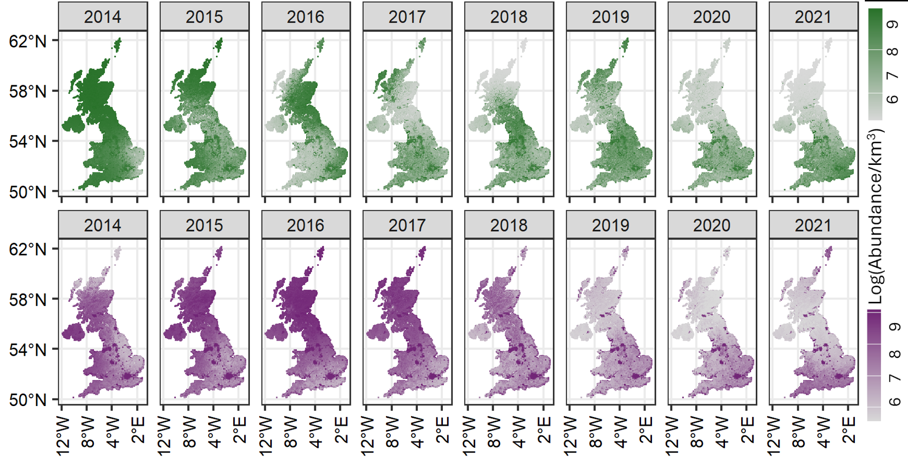

Arunachal moth systems
Moth diversity, colour and community assembly
A major part of my work focuses on moth communities in Arunachal Pradesh, especially along strong elevational and climatic gradients. I study how diversity, colour patterns, wing traits and ecological strategies vary across landscapes and among lineages.
These projects combine long-term field collections with community ecology, phylogenetics, trait measurement and comparative analyses. The broader goal is to understand how environmental filtering, biotic interactions and evolutionary history shape insect communities.
Community ecology · Colour · Phylogenetics

Computational ecology
Image processing, feature extraction and AI
I use image processing and machine-learning approaches to extract biological information from large image datasets. These methods help quantify colour, pattern, shape and other visual features that are difficult to measure manually at scale.
This work is especially useful for building reproducible trait pipelines, comparing thousands of individuals and linking image-derived features to ecological gradients. I am interested in developing tools that make insect monitoring faster, more scalable and more objective.
Computer vision · Feature extraction · AI
Traits and morphology
Morphological and colorimetric traits
I measure insect morphology and colour to understand how traits are linked to ecology, behaviour and environmental conditions. These measurements include wing geometry, body size, pigmentation, reflectance and pattern structure.
Photogrammetry and standardized imaging allow traits to be measured consistently across individuals and species. These trait datasets can then be used to test hypotheses about flight, thermoregulation, crypsis, elevation and evolutionary diversification.
Morphology · Colour metrics · Trait ecology
Radar ecology
Weather radar and aerial insect abundance
Weather radar networks can detect large-scale biological movement in the atmosphere, including insects, birds and other aerial organisms. My radar work uses these systems to quantify insect abundance and movement across space and time.
In the UK, this approach has been used to estimate aerial insect biomass and examine broad-scale temporal and spatial variation. Such work shows how meteorological infrastructure can be repurposed for biodiversity monitoring at national scales.
Weather radar · Aerial biomass · Monitoring
India radar work
Nocturnal insect emergence near Bhopal
I am developing radar-based methods to study aerial insect movement in India using weather radar observations near Bhopal. The Silkheda radar captures the dusk emergence of nocturnal insects over agricultural fields, providing a rare view of biological activity in the lower atmosphere.
This work aims to identify when, where and under what atmospheric conditions insects enter the airspace. It also provides a foundation for building long-term insect monitoring systems using existing radar networks.
Silkheda radar · Dusk emergence · BhopalMonsoon and meteorology
Indian weather radar, monsoon dynamics and aerial movement
India’s weather radar network provides a major opportunity to study ecological movement in relation to monsoon meteorology. I am interested in how wind fields, rainfall, atmospheric stability and seasonal weather systems affect the timing and intensity of aerial movement.
This research connects radar ecology with atmospheric science by asking how biological movement is structured by the physical environment. It can help build a clearer picture of insect activity across agricultural, forested and urban landscapes in India.
Monsoon · Meteorology · Radar networksAcross scales, from wings to weather systems.
Together, these projects ask how insects are shaped by their environments and how new technologies can make their hidden diversity and movement more visible.